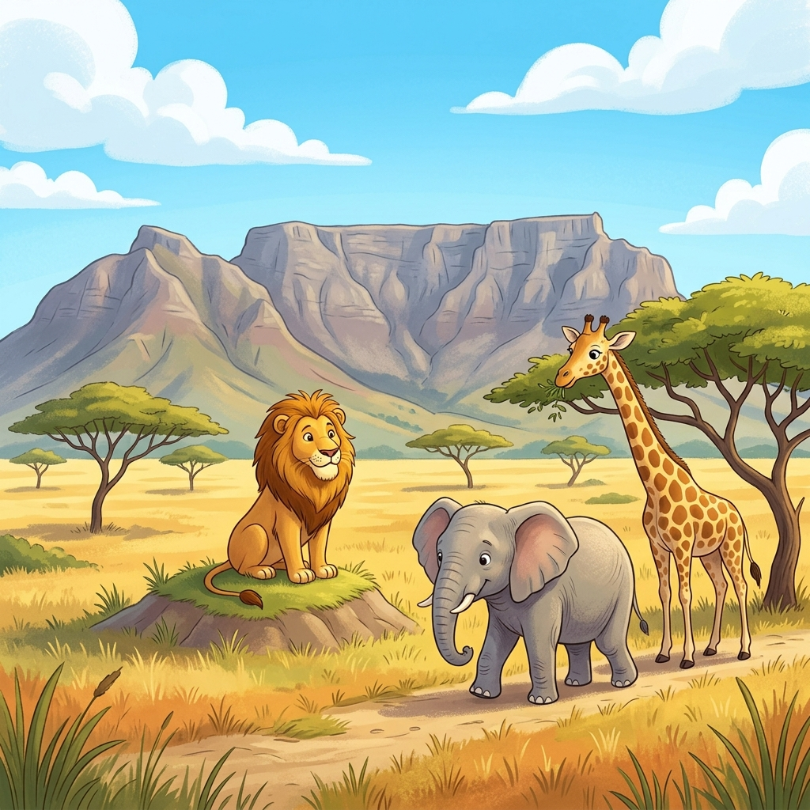
Hier stehen die wichtigsten Daten zu deinem Land. In der App baust du daraus deinen eigenen Steckbrief.
| Hauptstadt | Pretoria, dazu Kapstadt und Bloemfontein |
| Kontinent | Afrika |
| Sprache | Englisch und viele weitere Sprachen |
| Währung | Rand |
| Einwohner | rund 60 Millionen Menschen |
| Fläche | etwa 1,2 Millionen km², also mehr als dreimal so groß wie Deutschland |
| Großer Berg | Der höchste Berg heißt Mafadi und ist 3.450 Meter hoch; berühmt ist der flache Tafelberg bei Kapstadt |
| Nachbarländer | Namibia, Botswana, Simbabwe, Mosambik, Eswatini und Lesotho |
In Südafrika gibt es viele berühmte Orte. Diese vier solltest du kennen.
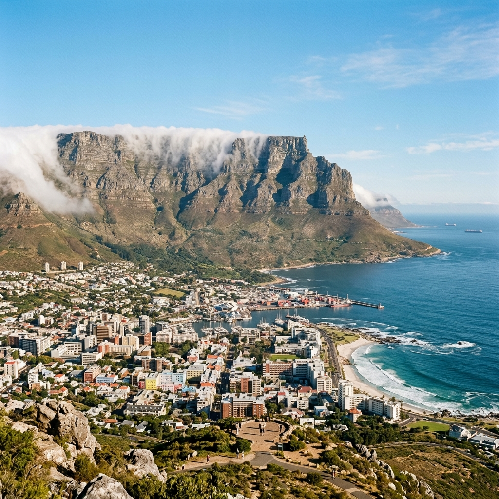
TafelbergDer Tafelberg steht bei der Stadt Kapstadt. Oben ist er ganz flach wie ein Tisch. Mit einer Seilbahn kann man nach oben fahren. Von dort sieht man das Meer und die Stadt.
Grüne Wörter für die Appbei der Stadt Kapstadtganz flachwie ein Tischeiner Seilbahndas Meer
Krüger-NationalparkDer Krüger-Nationalpark ist ein riesiges Schutzgebiet für Tiere. Hier leben Löwen, Elefanten und Giraffen in Freiheit. Mit dem Auto fährt man auf eine Safari. Dabei kann man die wilden Tiere beobachten.
Grüne Wörter für die Appriesiges SchutzgebietLöwenin Freiheiteine Safariwilden Tiere
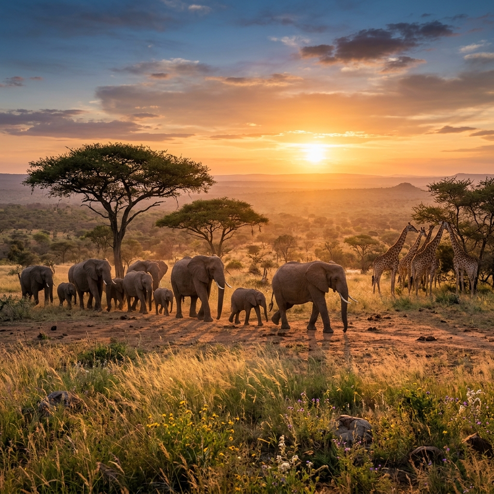
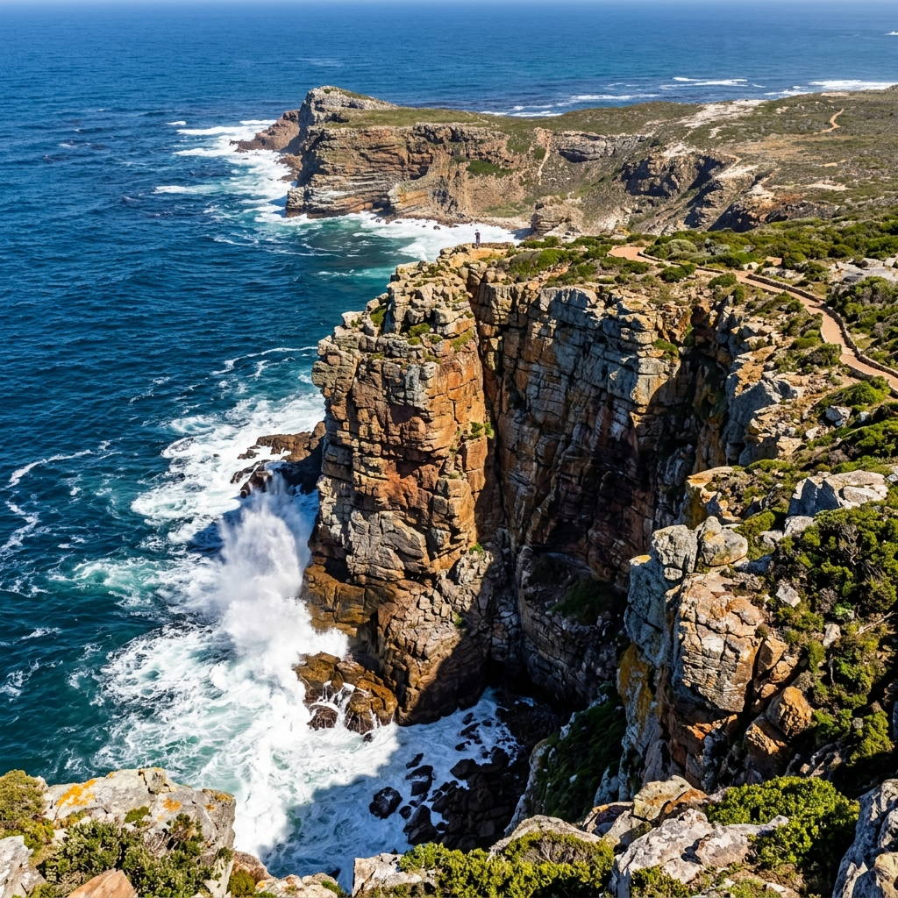
Kap der Guten HoffnungDas Kap der Guten Hoffnung liegt ganz im Süden von Afrika. Es ist eine felsige Spitze am Meer. Hier treffen zwei große Meere aufeinander. Früher fuhren hier viele Schiffe vorbei.
Grüne Wörter für die Appim Süden von Afrikafelsige Spitzeam Meerzwei große Meereviele Schiffe
Bo-KaapBo-Kaap ist ein bunter Stadtteil in Kapstadt. Die Häuser sind in fröhlichen Farben angemalt. Es gibt rosa, blaue und gelbe Häuser. Viele Menschen machen hier schöne Fotos.
Grüne Wörter für die Appbunter Stadtteilin Kapstadtfröhlichen Farbengelbe Häuserschöne Fotos
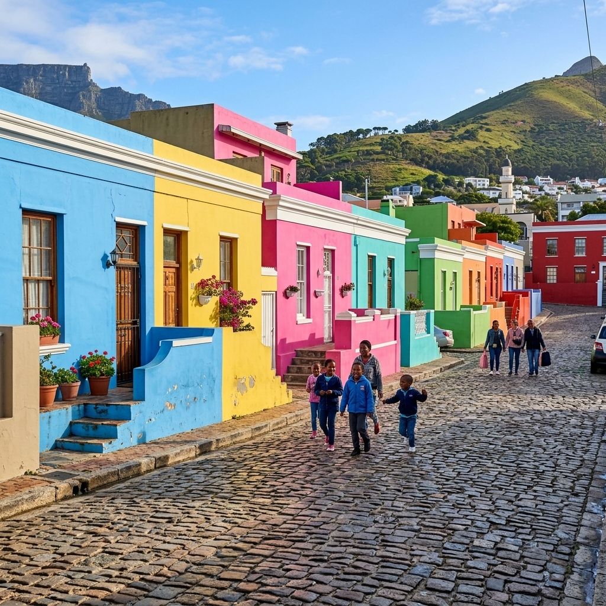
Diese Tiere leben in Südafrika und sind ganz besonders.
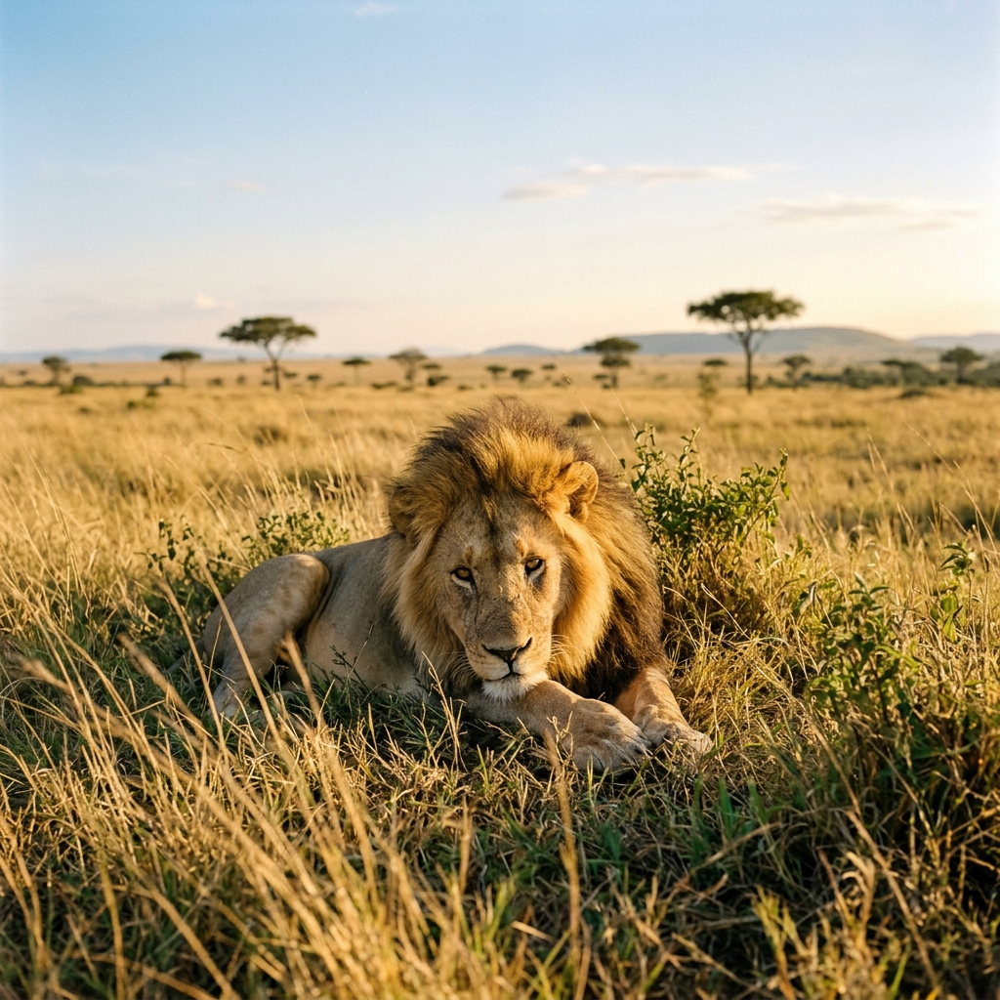
LöweDer Löwe ist ein starkes Raubtier in Afrika. Die Männchen haben eine große Mähne um den Kopf. Löwen leben zusammen in einer Gruppe. Tagsüber schlafen sie oft im Schatten.
Grüne Wörter für die Appstarkes Raubtiereine große Mähnein einer GruppeTagsüberim Schatten
Afrikanischer ElefantDer afrikanische Elefant ist das größte Landtier der Welt. Mit seinem langen Rüssel greift er nach Futter. Die großen Ohren helfen ihm beim Abkühlen. Elefanten leben in einer großen Familie.
Grüne Wörter für die Appgrößte Landtierlangen Rüsselgroßen Ohrenbeim Abkühlengroßen Familie
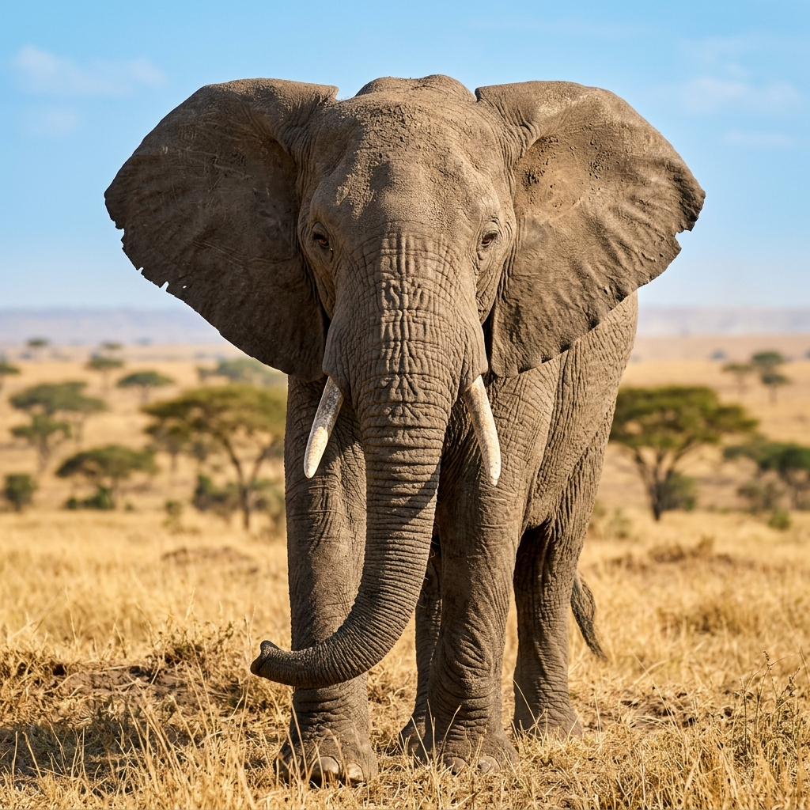
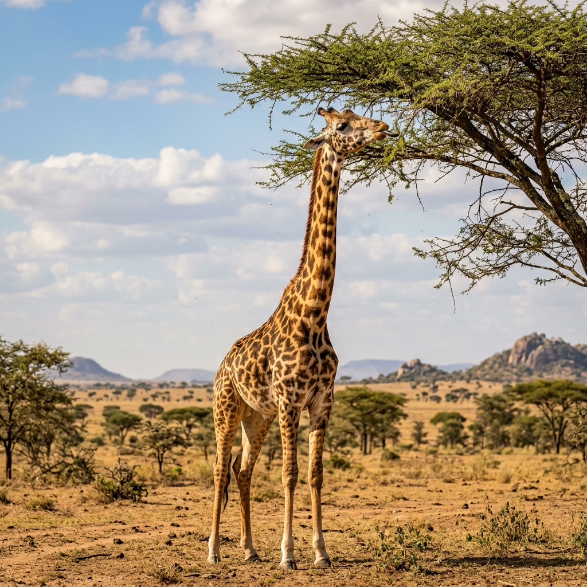
GiraffeDie Giraffe ist das höchste Tier auf der Welt. Mit ihrem langen Hals frisst sie Blätter von hohen Bäumen. Ihr Fell hat ein Muster aus braunen Flecken. Giraffen können sehr gut sehen.
Grüne Wörter für die Apphöchste Tierlangen Halsvon hohen Bäumenbraunen Fleckengut sehen
In der App kannst du beim Essen das Foto nehmen oder dein Gericht selbst malen.
BraaiBraai ist das Wort für Grillen in Südafrika. Fast jede Familie hat einen Grill im Garten. Am Wochenende wird Fleisch und Wurst gegrillt. Die Menschen treffen sich dabei mit Freunden.
Grüne Wörter für die AppWort für Grilleneinen Grillim GartenFleisch und Wurstmit Freunden
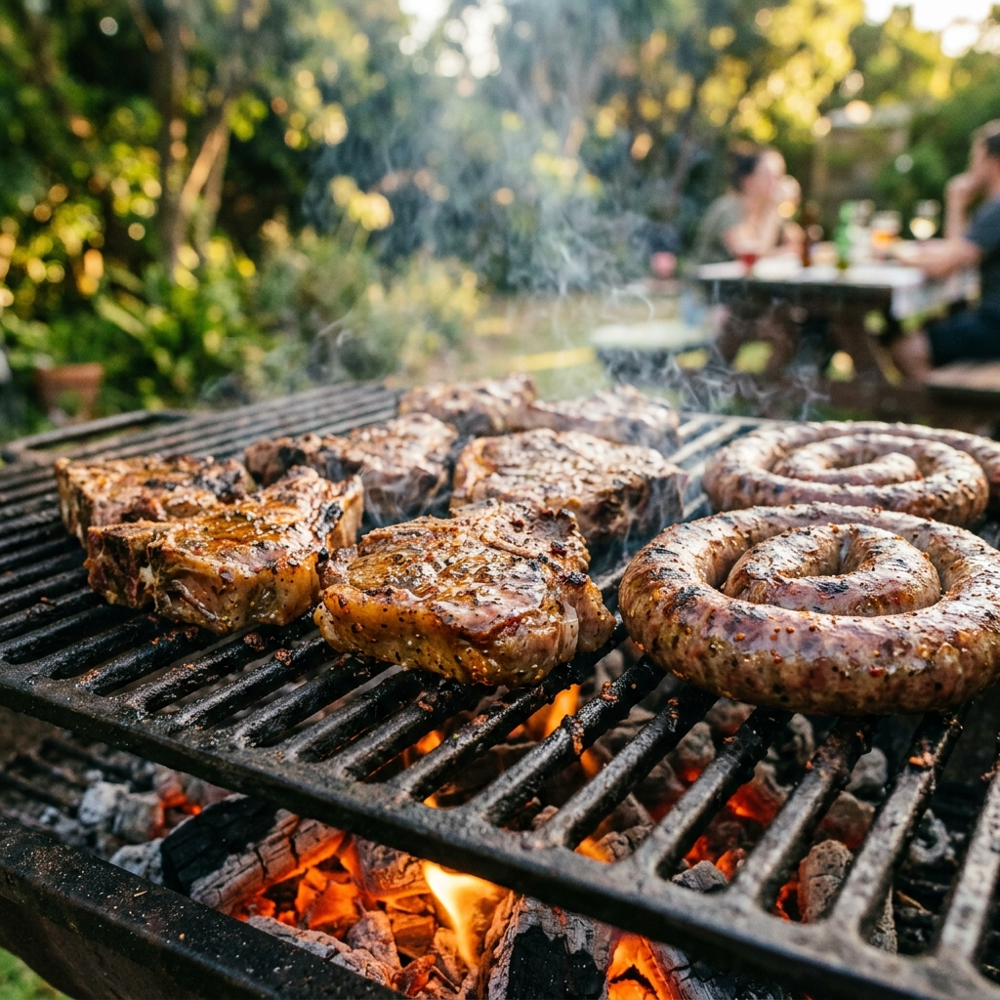
PapPap ist ein dicker Brei aus Maismehl. Er ist weiß und schmeckt mild. Pap isst man oft zu Fleisch und Soße. In Südafrika gehört er zu vielen Mahlzeiten.
Grüne Wörter für die Appdicker Breiaus Maismehlschmeckt mildzu Fleischvielen Mahlzeiten
Malva-PuddingMalva-Pudding ist ein süßer warmer Kuchen. Er ist weich und klebrig und schmeckt nach Karamell. Dazu gibt es oft eine süße Soße. Viele Kinder mögen ihn als Nachtisch.
Grüne Wörter für die Appsüßer warmer Kuchenweich und klebrignach Karamelleine süße Soßeals Nachtisch
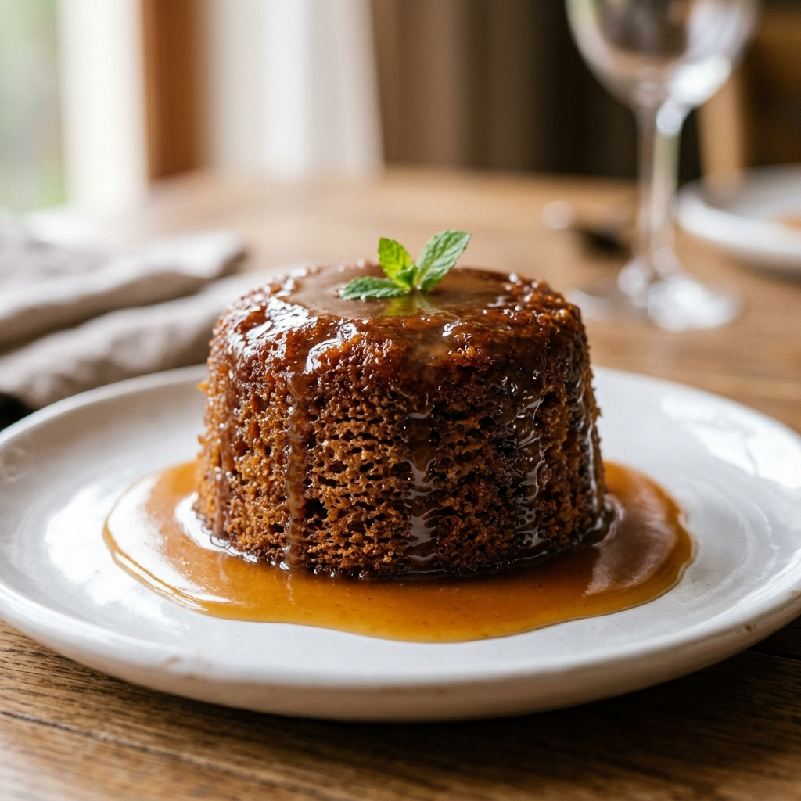
⚽ Gut zu wissen
Die Nationalmannschaft von Südafrika heißt Bafana Bafana. Das bedeutet die Jungs in einer Sprache des Landes. Die Spieler tragen ein gelbes Trikot mit grün. Im Jahr 2010 war Südafrika Gastgeber der Weltmeisterschaft. Damals war es die erste WM in Afrika.
Grüne Wörter für die AppBafana Bafanadie Jungsgelbes TrikotGastgebererste WM in Afrika
🌟 Profi-Wissen
Südafrika war 2010 Gastgeber der Weltmeisterschaft. Es war die erste WM in Afrika. Die Fans bliesen Vuvuzelas, das sind Plastiktrompeten, die sehr laut klingen. Das berühmte Stadion heißt Soccer City in Johannesburg. Die Nationalmannschaft heißt Bafana Bafana.
Grüne Wörter für die AppWM-Gastgeber 2010Vuvuzelaerste WM in AfrikaBafana BafanaSoccer City Johannesburg
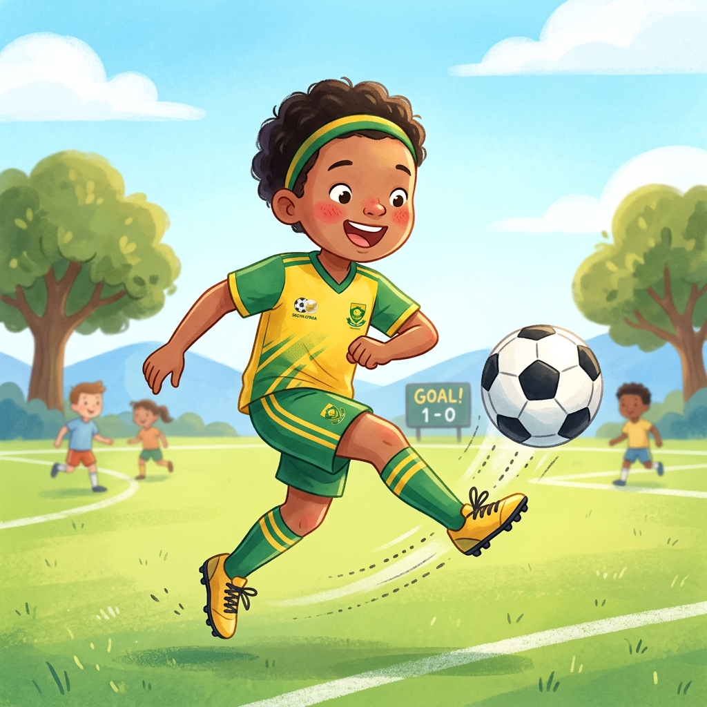
Schule in SüdafrikaIn Südafrika tragen die Kinder oft eine Schuluniform. Die Schule beginnt am Morgen mit allen zusammen. Viele Kinder sprechen zu Hause eine andere Sprache als in der Schule. In der Pause spielen sie gern auf dem Schulhof.
Grüne Wörter für die Appeine Schuluniformam Morgeneine andere SpracheIn der Pauseauf dem Schulhof
Viele SprachenIn Südafrika spricht man mehr als zehn verschiedene Sprachen. Darum sagt man Hallo auf ganz viele Arten. Die Menschen kommen aus vielen Völkern zusammen. Man nennt das Land auch die Regenbogennation.
Grüne Wörter für die Appmehr als zehnverschiedene Sprachensagt man Hallovielen Völkerndie Regenbogennation
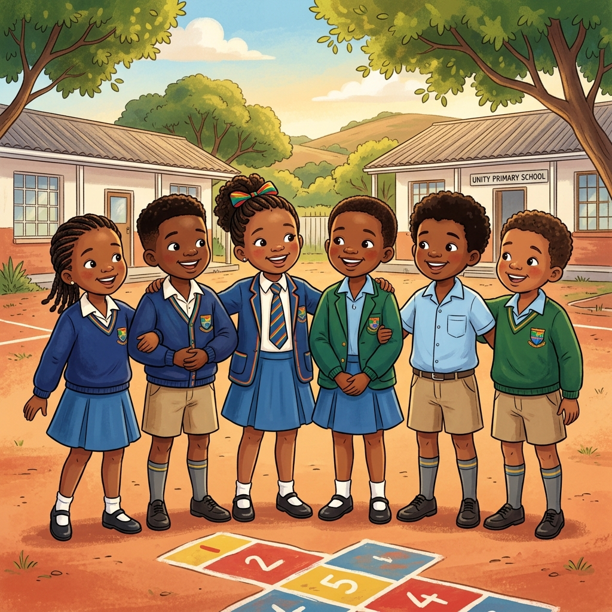